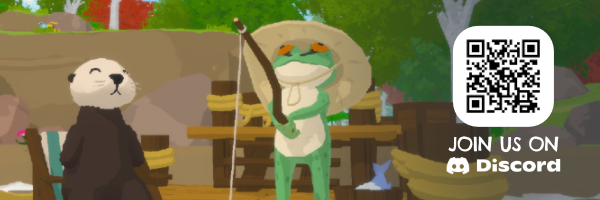

A COZY STORY-RICH ADVENTURE
Otterly Lost is about wonder, friendship, and finding where you belong.
A curious sea otter named Otto was swept away from home after a mysterious event. Far from familiar waters, you must find your way back. Meet friendly animals and explore a world full of places to discover.
EXPLORE AT YOUR OWN PACE
Every step (or splash) uncovers something new: a story, a view, or a quiet moment to take in.
Swim through kelp forests and hidden caves, glide over sunny shores, or climb rocky canyons. Solve soft puzzles, help others and enjoy light platforming as you explore the open world.
HANDY TOOLS, PRECIOUS FINDS
Otters know a thing or two about tools, especially rocks!
Use your favorite rock to break through obstacles and discover new tools and treasures. Upgrade your natural abilities to swim faster, jump higher, climb easier, and glide further.
MAKE FRIENDS ALONG THE WAY
Meet lovely creatures, from an ancient turtle to an aspiring frog singer.
Some will need your help, while others will guide you on your journey. Get to know them and their stories, lend a paw in their troubles, and slowly learn how everything is connected.
CUSTOMIZE YOUR LOOK
Going for cute, classy, or maybe a little chaotic? We fully support your choices!
Collect charming accessories and quirky hats by exploring the world, trading with a local fisherman, or buying them in cosmetics shops.